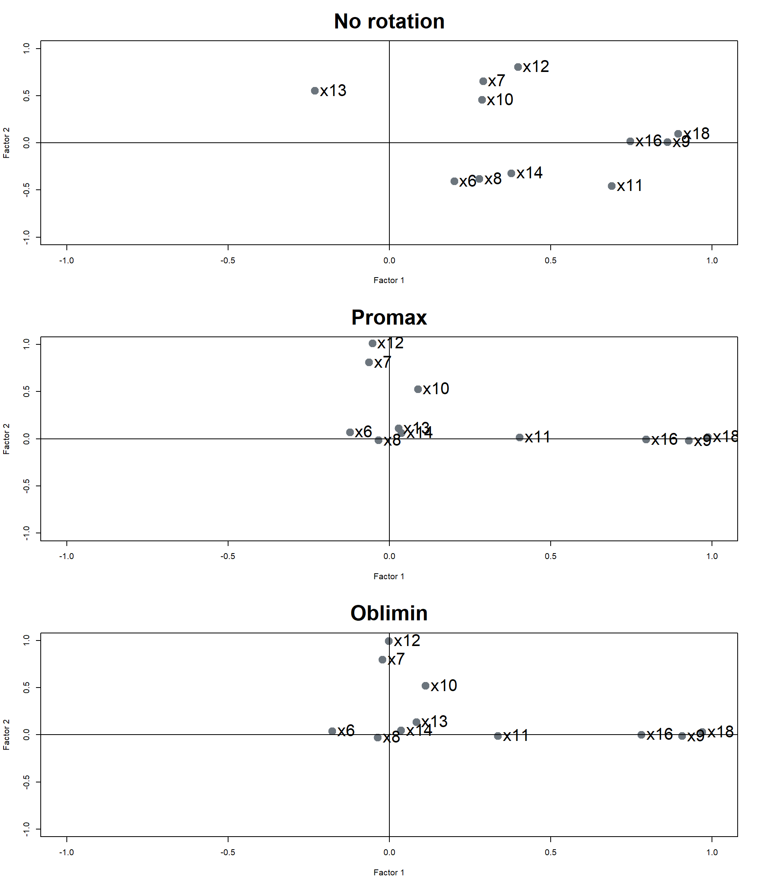

.
Factor analysis process
Stage 1: Objectives of factor analysis
Stage 2: Designing an Exploratory factor analysis
Stage 3: Assumptions in Exploratory factor analysis
Stage 4: Deriving factors and assessing overall fit
Stage 5: Interpreting the factors
Stage 1 : Objectives of factor analysis
Overview
Overview
Exploratory factor analysis
Exploratory or descriptive technique to determine the appropriate number of common factor.
No specifications are made in regards to the number of factors (initially) or the pattern of relationships between factor and indicators
Looking for patterns in the data
Confirmatory factor analysis
Should be conducted prior to the specifications of a structural model.
Researcher specifies the number of factors and the pattern of indicator-factor in advance.
Testing a theory that you know in advance
Stage 2: Designing an EFA
Variable selection and measurement issues
What types of variables can be used in factor analysis?
- Primary requirement: a correlation value can be calculated among all variables.
- e.g., metric variables, scale items, dummy variables to represent nonmetric variables.
How many variables or items should be used per factor?
- Five or more per factor for scale development.
- Three or more per factor for factor measurement (based on how degrees of freedom is computed).
Sample size
Some recommendations in literature:
Five cases minimum per estimated parameter (Bentler and Chou, 1987)
Monte carlo studies recommend 100 cases minimum and 200 is better for modest models (Loehlin, 2017)
Larger or complicated models, models with more latent variables or parameter estimates, require more cases.
Stage 3: Assumptions in EFA
Sample Dataset
- HBAT Industries, manufacturer of paper products.
- Perceptions on a set of business functions.
- Rating scale:
0 "poor"to10 "excellent"
Sample Dataset
- \(X_6\) product quality
- \(X_7\) e-commerce
- \(X_8\) technical support
- \(X_9\) complaint resolution
- \(X_{10}\) advertising
- \(X_{11}\) product line
- \(X_{12}\) salesforce image
- \(X_{13}\) competitive pricing
- \(X_{14}\) warranty claims
- \(X_{15}\) packaging
- \(X_{16}\) order & billing
- \(X_{17}\) price flexibility
- \(X_{18}\) delivery speed
Conceptual assumptions
Some uderlying structure does exist in the set of selected variables.
correlated variables and subsequent definition of factors do not guarantee relevance
- even if they meet the statistical requirement!
It is the responsibility of the researcher to ensure that observed patterns are conceptually valid and appropriate.
Determining appropriateness of EFA
Bartlett Test
Measure of Sampling Adequacy
Determining the appropriateness of EFA
1. Bartlett Test
- Examines the entire correlation matrix
- Test the hypothesis that correlation matrix is an identity matrix.
- A significant result signifies data are appropriate for factor analysis.
Determining the appropriateness of EFA
2. Kaiser-Meyen-Olkin (KMO Test)
- Measure of sampling adequacy
- Indicate the proportion of variance explained by the underlying factor.
- Guidelines:
- \(\ge 0.90\) - marvelous
- \(\ge 0.80\) - meritorious
- \(\ge 0.70\) - middling
- \(\ge 0.60\) - mediocre
- \(\ge 0.50\) - miserable
- \(< 0.50\) - unacceptable
Determining the appropriateness of EFA
2. Kaiser-Meyen-Olkin (KMO Test)
Determining the appropriateness of EFA
2. Kaiser-Meyen-Olkin (KMO Test)
- When overall MSA is less than 0.50
- Identify variables with lowest MSA subject for deletion.
- Recalculate MSA
- Repeat unitl overall MSA is 0.50 and above
- Deletion of variables with MSA under 0.50 means variable’s correlation with
other variables are poorly representing the extracted factor.
Let’s practice!
Stage 4: Deriving factors and
assessing overall fit
Partitioning the variance of a variable
Unique variance
- Variance associated with only a specific variable.
- Not represented in the correlations among variables.
- Specific variance
- associated uniquely with a single variable.
- Error variance
- May be due to unreliability of data gathering process, measurement error, or a random component in the measured phenomenom.
Common variance
- Shared variance with all other variables.
- High common variance are more amenable for factor analysis.
- Derived factors represents the shared or common variance among the variables.
Partitioning the variance of a variable
PCA vs Common factor analysis
Principal component analysis (PCA)
- Considers the total variance
- data reduction is a primary concern
Common factor analysis
- Considers only the common variance or shared variance
- Primary objective is to identify the latent dimensions or constructs
Exploring possible factors
Exploring possible factors
Exploring possible factors
3. Parallel Test
- Generates a large number of simulated dataset.
- Each simulated dataset is factor analyzed.
- Results is the average eigenvalues across simulation.
- Values are then compared to the eigenvalues extracted from the original dataset.
- All factors with eigenvalues above those average eigenvalues are retained.

Let’s practice!
Stage 5: Interpreting the factors
Three process of factor intepretation
1. Factor extraction
2. Factor rotation
3. Factor interpretation and re-specification
Factor extraction
fa_unrotated <- fa(r = data, nfactors = 4, rotate = "none")
print(fa_unrotated$loadings)
Loadings:
MR1 MR2 MR3 MR4
x6 0.201 -0.408 0.463
x7 0.290 0.656 0.267 0.210
x8 0.278 -0.382 0.744 -0.169
x9 0.862 -0.255 -0.184
x10 0.287 0.456 0.127
x11 0.689 -0.454 -0.141 0.316
x12 0.398 0.807 0.348 0.255
x13 -0.231 0.553 -0.287
x14 0.378 -0.322 0.730 -0.151
x16 0.747 -0.176 -0.181
x18 0.895 -0.304 -0.198
MR1 MR2 MR3 MR4
SS loadings 3.215 2.226 1.500 0.679
Proportion Var 0.292 0.202 0.136 0.062
Cumulative Var 0.292 0.495 0.631 0.693Loadings
- Correlation of each variable and the factor.
- Indicate the degree of correspondence between variable and factor.
- Higher loadings making the variable representative of the factor.
Factor extraction
fa_unrotated <- fa(r = data, nfactors = 4,rotate = "none")
print(fa_unrotated$loadings)
Loadings:
MR1 MR2 MR3 MR4
x6 0.201 -0.408 0.463
x7 0.290 0.656 0.267 0.210
x8 0.278 -0.382 0.744 -0.169
x9 0.862 -0.255 -0.184
x10 0.287 0.456 0.127
x11 0.689 -0.454 -0.141 0.316
x12 0.398 0.807 0.348 0.255
x13 -0.231 0.553 -0.287
x14 0.378 -0.322 0.730 -0.151
x16 0.747 -0.176 -0.181
x18 0.895 -0.304 -0.198
MR1 MR2 MR3 MR4
SS loadings 3.215 2.226 1.500 0.679
Proportion Var 0.292 0.202 0.136 0.062
Cumulative Var 0.292 0.495 0.631 0.693Loadings
\(\le \pm 0.10 \approx\) zero
\(\pm 0.10\) to \(\pm 0.40\) meet the minimal level
\(\ge \pm 0.50\) practically significant
\(\ge \pm 0.70 \approx\) well-defined structure
SS loadings
Eigenvalues - column sum of squared factor loadings.
Relative importance of each factor in accounting for the variance associated with the set of variables.
Factor rotation
Why do factor rotation?
To simplify the complexity of factor loadings.
Distribute the loading more clearly into the factors.
Facilitate interpretation.
Factor rotation
fa_rotated <- fa(r = data, nfactors = 4,rotate = "varimax")
par(mfrow = c(2, 1))
plot(fa_unrotated$loadings[,1],
fa_unrotated$loadings[,2],
xlab = "Factor 1",
ylab = "Factor 2",
ylim = c(-1, 1),
xlim = c(-1, 1),
main = "No rotation",
pch = 19,
cex = 2,
col = "#6c757d")
abline(h=0, v=0)
text(fa_unrotated$loadings[,1],
fa_unrotated$loadings[,2],
labels = rownames(fa_unrotated$loadings),
pos = 4, cex = 1)
plot(fa_rotated$loadings[,1],
fa_rotated$loadings[,2],
xlab = "Factor 1",
ylab = "Factor 2",
ylim = c(-1, 1),
xlim = c(-1, 1),
main = "With rotation",
pch = 19,
cex = 2,
col = "#6c757d")
abline(h=0, v=0)
text(fa_rotated$loadings[,1],
fa_rotated$loadings[,2],
labels = rownames(fa_unrotated$loadings),
pos = 4, cex = 1)Factor rotation
Orthogonal rotation
axes are maintained at 90 degrees
orthogonal rotation methods
Varimax - most commonly used
Quartimax
Equimax
Check-out some of these references
Factor rotation
Orthogonal rotation
fa_varimax <- fa(r = data, nfactors = 4,rotate = "varimax")
fa_quartimax <- fa(r = data, nfactors = 4,rotate = "quartimax")
fa_equamax <- fa(r = data, nfactors = 4,rotate = "equamax")
par(mfrow = c(2, 2))
plot(fa_unrotated$loadings[,1],
fa_unrotated$loadings[,2],
xlab = "Factor 1",
ylab = "Factor 2",
ylim = c(-1, 1),
xlim = c(-1, 1),
main = "No rotation",
cex.main = 3,
pch = 19,
cex = 4,
col = "#6c757d")
abline(h=0, v=0)
text(fa_unrotated$loadings[,1],
fa_unrotated$loadings[,2],
labels = rownames(fa_unrotated$loadings),
pos = 4, cex = 2)
plot(fa_varimax$loadings[,1],
fa_varimax$loadings[,2],
xlab = "Factor 1",
ylab = "Factor 2",
ylim = c(-1, 1),
xlim = c(-1, 1),
main = "Varimax",
cex.main = 3,
pch = 19,
cex = 4,
col = "#6c757d")
abline(h=0, v=0)
text(fa_varimax$loadings[,1],
fa_varimax$loadings[,2],
labels = rownames(fa_varimax$loadings),
pos = 4, cex = 2)
plot(fa_quartimax$loadings[,1],
fa_quartimax$loadings[,2],
xlab = "Factor 1",
ylab = "Factor 2",
ylim = c(-1, 1),
xlim = c(-1, 1),
main = "Quartimax",
cex.main = 3,
pch = 19,
cex = 4,
col = "#6c757d")
abline(h=0, v=0)
text(fa_quartimax$loadings[,1],
fa_quartimax$loadings[,2],
labels = rownames(fa_quartimax$loadings),
pos = 4, cex = 2)
plot(fa_equamax$loadings[,1],
fa_equamax$loadings[,2],
xlab = "Factor 1",
ylab = "Factor 2",
ylim = c(-1, 1),
xlim = c(-1, 1),
main = "Equamax",
cex.main = 3,
pch = 19,
cex = 4,
col = "#6c757d")
abline(h=0, v=0)
text(fa_equamax$loadings[,1],
fa_equamax$loadings[,2],
labels = rownames(fa_equamax$loadings),
pos = 4, cex = 2)
Factor rotation
Oblique rotation rotation
allow correlated factors
suited to the goal of theoretically meaningful constructs
oblique rotation methods
Promax
Oblimin
Factor rotation
Oblique rotation
fa_promax <- fa(r = data, nfactors = 4,rotate = "promax")
fa_oblimin <- fa(r = data, nfactors = 4,rotate = "oblimin")
par(mfrow = c(1, 3))
plot(fa_unrotated$loadings[,1],
fa_unrotated$loadings[,2],
xlab = "Factor 1",
ylab = "Factor 2",
ylim = c(-1, 1),
xlim = c(-1, 1),
main = "No rotation",
pch = 19,
col = "#6c757d")
abline(h=0, v=0)
text(fa_unrotated$loadings[,1],
fa_unrotated$loadings[,2],
labels = rownames(fa_unrotated$loadings),
pos = 4, cex = 0.5)
plot(fa_promax$loadings[,1],
fa_promax$loadings[,2],
xlab = "Factor 1",
ylab = "Factor 2",
ylim = c(-1, 1),
xlim = c(-1, 1),
main = "Promax",
pch = 19,
col = "#6c757d")
abline(h=0, v=0)
text(fa_promax$loadings[,1],
fa_promax$loadings[,2],
labels = rownames(fa_promax$loadings),
pos = 4, cex = 0.5)
plot(fa_oblimin$loadings[,1],
fa_oblimin$loadings[,2],
xlab = "Factor 1",
ylab = "Factor 2",
ylim = c(-1, 1),
xlim = c(-1, 1),
main = "Oblimin",
pch = 19,
col = "#6c757d")
abline(h=0, v=0)
text(fa_oblimin$loadings[,1],
fa_oblimin$loadings[,2],
labels = rownames(fa_oblimin$loadings),
pos = 4, cex = 0.5)

Factor interpretation and respecification
each variable has a high loadings on one factor only
each factor has a high loadings for only a subset of the items.
fa_varimax <- fa(r = data, nfactors = 4, rotate = "varimax")
print(fa_varimax$loadings, sort = TRUE)
Loadings:
MR1 MR2 MR3 MR4
x9 0.897 0.130 0.132
x16 0.768 0.127
x18 0.949 0.185
x7 0.781 -0.115
x10 0.166 0.529
x12 0.114 0.980 -0.133
x8 0.890 0.115
x14 0.103 0.879 0.129
x6 0.647
x11 0.525 0.127 0.712
x13 0.213 -0.209 -0.590
MR1 MR2 MR3 MR4
SS loadings 2.635 1.973 1.641 1.371
Proportion Var 0.240 0.179 0.149 0.125
Cumulative Var 0.240 0.419 0.568 0.693Factor interpretation and respecification
each variable has a high loadings on one factor only
each factor has a high loadings for only a subset of the items.
fa_varimax <- fa(r = data, nfactors = 4, rotate = "varimax")
print(fa_varimax$loadings, sort = TRUE, cutoff = 0.4)
Loadings:
MR1 MR2 MR3 MR4
x9 0.897
x16 0.768
x18 0.949
x7 0.781
x10 0.529
x12 0.980
x8 0.890
x14 0.879
x6 0.647
x11 0.525 0.712
x13 -0.590
MR1 MR2 MR3 MR4
SS loadings 2.635 1.973 1.641 1.371
Proportion Var 0.240 0.179 0.149 0.125
Cumulative Var 0.240 0.419 0.568 0.693Factor interpretation and respecification
What to do with cross-loadings?
Ratio of variance (JF Hair et al. 2019)
- 1 to 1.5 - problematic
- 1.5 to 2.0 - potential cross-loading
- 2.0 and higher - ignorable
Example:
- \(X_{11}\)
MR1: 0.525MR2: 0.712- \(0.712^2 \div 0.525^2 = 1.8\)
fa_varimax <- fa(r = data, nfactors = 4, rotate = "varimax")
print(fa_varimax$loadings, sort = TRUE, cutoff = 0.4)
Loadings:
MR1 MR2 MR3 MR4
x9 0.897
x16 0.768
x18 0.949
x7 0.781
x10 0.529
x12 0.980
x8 0.890
x14 0.879
x6 0.647
x11 0.525 0.712
x13 -0.590
MR1 MR2 MR3 MR4
SS loadings 2.635 1.973 1.641 1.371
Proportion Var 0.240 0.179 0.149 0.125
Cumulative Var 0.240 0.419 0.568 0.693Factor interpretation and respecification
Naming of factors
MR1: Postsale customer service
x9 Complaint resolutions
x16 Order & Billing
x18 Delivery speed
MR2: Marketing
x7 E-Commerce
x10 Advertising
x12 Salesforce image
MR3: Technical support
x8 Technical support
x14 Warranty and claims
MR4: Product value
x6 Product quality
x11 Product line
x13 Competitive pricing
Factor interpretation and respecification
Extracting factor scores
MR1: Postsale customer service
MR2: Marketing
MR3: Technical support
MR4: Product value
fa_varimax$scores %>% round(4) %>% data.frame() %>% tibble()
# A tibble: 100 × 4
MR1 MR2 MR3 MR4
<dbl> <dbl> <dbl> <dbl>
1 -0.139 0.940 -1.72 0.0968
2 1.64 -2.04 -0.591 0.650
3 0.356 0.876 0.016 1.38
4 -1.22 -0.557 1.25 -0.646
5 -0.486 -0.421 -0.031 0.476
6 -0.592 -1.31 -1.20 -0.959
7 -2.54 0.417 -0.569 -1.30
8 -0.115 -0.118 -0.707 -1.36
9 0.952 0.372 -0.139 -0.929
10 0.586 0.408 -0.462 -0.674
# ℹ 90 more rowsLet’s practice!

Econ 149: analytical and statistical packages for economics